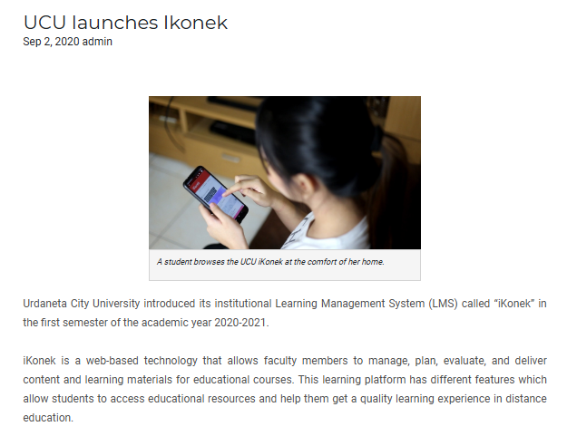
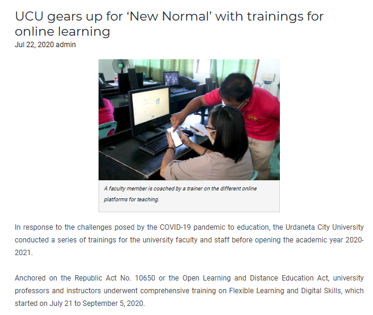
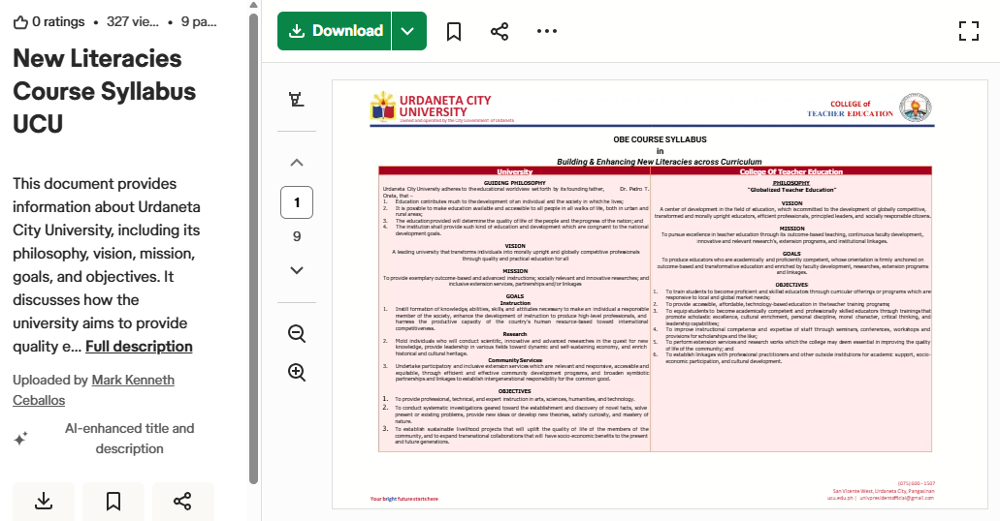

LMS Platform (iKonek): The implementation of the iKonek Learning Management System (LMS) was driven by the university’s need to adapt to flexible learning modalities and digital transformation in education. Accelerated by the growing demand for online and blended learning, especially during and after the COVID-19 pandemic, the platform was established to provide a centralized digital environment for academic delivery. It reflects the institution’s commitment to improving access to education, enhancing instructional efficiency, and integrating technology into core academic processes.
Faculty Digital Training: Faculty digital training programs were developed in response to the increasing integration of technology in education and the shift toward blended and online learning environments. As the university adopted the LMS, there was a recognized need to ensure that faculty members are equipped with the necessary digital competencies to effectively utilize these tools. These training initiatives support faculty adaptation to modern teaching approaches and ensure the quality and continuity of instruction in a technology-enhanced academic setting.
Student Digital Literacy Development:
The background of student digital literacy development is rooted in the growing importance of digital skills in higher education and the workforce. With the increasing reliance on technology for learning, communication, and information access, the university recognized the need to prepare students for digital environments. This initiative ensures that students are not only consumers of digital tools but also competent users who can engage responsibly, critically, and effectively in academic and professional contexts.
| LMS-Enabled Digital Literacy Portals & Systems | |
|---|---|
| Academic & LMS Portals | Digital Competency & Literacy Platforms |
|
 UCU iKonek LMS - Academic Portal Portal Interface
|
 UCU Faculty Digital Competency Training Portal
|
|
 UCU Student Digital Literacy Development Platform
|
|